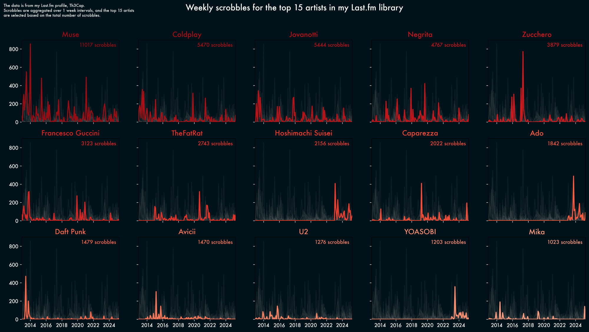
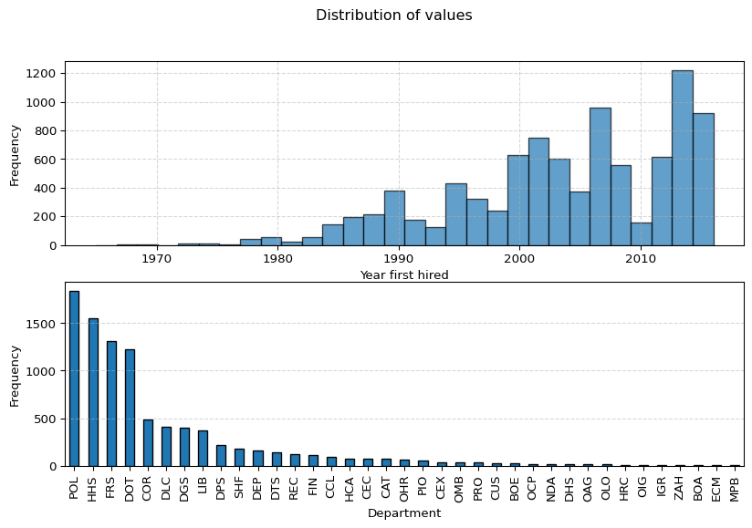

I’m Italian, but I don’t drink coffee, wine, and I like pizza with fries
I did my PhD in Côte d’Azur, and I moved away because it was too sunny and I don’t like the sea
Fun facts
I’m mildly obsessed with matplotlib

Boost your productivity with skrub!
skrub simplifies many tedious data preparation operations
An example pipeline
Gather some data
Explore the data
Pre-process the data
Perform feature engineering
Build a scikit-learn pipeline
???
Profit?
Exploring the data
import pandas as pdimport matplotlib.pyplot as pltimport skrubdataset = skrub.datasets.fetch_employee_salaries()employees, salaries = dataset.X, dataset.ydf = pd.DataFrame(employees)# Plot the distribution of the numerical values using a histogramfig, axs = plt.subplots(2,1, figsize=(10, 6))ax1, ax2 = axsax1.hist(df['year_first_hired'], bins=30, edgecolor='black', alpha=0.7)ax1.set_xlabel('Year first hired')ax1.set_ylabel('Frequency')ax1.grid(True, linestyle='--', alpha=0.5)# Count the frequency of each categorycategory_counts = df['department'].value_counts()# Create a bar plotcategory_counts.plot(kind='bar', edgecolor='black', ax=ax2)# Add labels and titleax2.set_xlabel('Department')ax2.set_ylabel('Frequency')ax2.grid(True, linestyle='--', axis='y', alpha=0.5) # Add grid lines for y-axisfig.suptitle("Distribution of values")# Show the plotplt.show()
Exploring the data

Exploring the data with skrub
from skrub import TableReportTableReport(employee_salaries)
Explore the distribution of values and find outliers
Discover highly correlated columns
Export and share the report as an html file
Data cleaning with Pandas
import pandas as pdimport numpy as npdata = {'A': [1, 1, 1], # Single unique value'B': [2, 3, 2], # Multiple unique values'C': ['x', 'x', 'x'], # Single unique value'D': [4, 5, 6], # Multiple unique values'E': [np.nan, np.nan, np.nan], # All missing values 'F': ['', '', ''], # All empty strings'Date': ['01/01/2023', '02/01/2023', '03/01/2023'],}df = pd.DataFrame(data)display(df)
A
B
C
D
E
F
Date
0
1
2
x
4
NaN
01/01/2023
1
1
3
x
5
NaN
02/01/2023
2
1
2
x
6
NaN
03/01/2023
Data cleaning with Pandas
# Parse the datetime strings with a specific formatdf['Date'] = pd.to_datetime(df['Date'], format='%d/%m/%Y')# Drop columns with only a single unique valuedf_cleaned = df.loc[:, df.nunique(dropna=True) >1]# Function to drop columns with only missing values or empty stringsdef drop_empty_columns(df):# Drop columns with only missing values df_cleaned = df.dropna(axis=1, how='all')# Drop columns with only empty strings empty_string_cols = df_cleaned.columns[df_cleaned.eq('').all()] df_cleaned = df_cleaned.drop(columns=empty_string_cols)return df_cleaned# Apply the function to the DataFramedf_cleaned = drop_empty_columns(df_cleaned)display(df_cleaned)
B
D
Date
0
2
4
2023-01-01
1
3
5
2023-01-02
2
2
6
2023-01-03
Lightweight data cleaning: Cleaner
from skrub import Cleanercleaner = Cleaner(drop_if_constant=True, datetime_format='%d/%m/%Y')df_cleaned = cleaner.fit_transform(df)display(df_cleaned)
In a Jupyter environment, please rerun this cell to show the HTML representation or trust the notebook. On GitHub, the HTML representation is unable to render, please try loading this page with nbviewer.org.
Keep track of train, validation and test splits to avoid data leakage
Simplify hyperparameter tuning and reporting
Handle complex pipelines that involve multiple tables and custom
Persist all objects for reproducibility
Starting with expressions
data = skrub.datasets.fetch_credit_fraud()X = skrub.X(data.baskets[["ID"]]) # mark as "X"y = skrub.y(data.baskets["fraud_flag"]) # mark as "y"products = skrub.var("products", data.products) # add a new variable